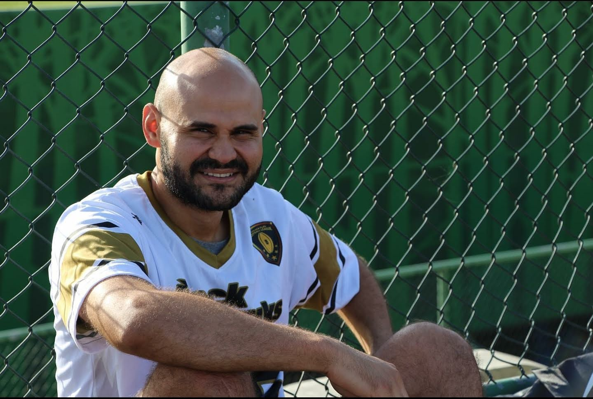

Jonathan López
Sobre mí
Soy un Ingeniero de Sistemas, apasionado de la tecnología, por lo que me gusta mantenerme en continuo aprendizaje. Esposo de una gran mujer y padre de un niño y una niña que son mi inspiración.
Educación

Master en Gerencia Informatica con enfasis en Seguridad Computacional. - Universidad Latina de Panamá.
Ingeniería de Sistemas Computacionales - Universidad Tecnológica de Panamá
Cisco Cyber Security Operations - Cisco Academy.
Actividades

Futbol, flag futbol, correr, leer, tomar cursos online de tecnología y diversos temas de superación profesional.